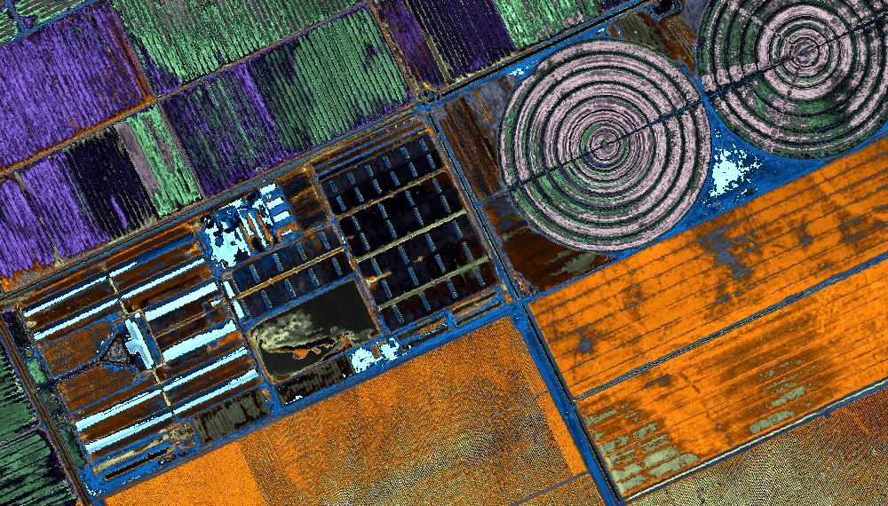
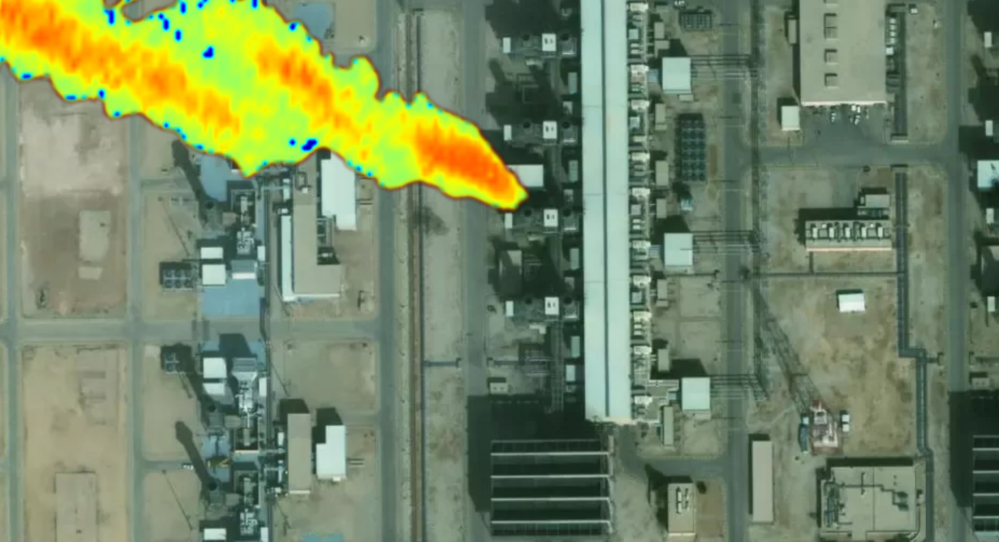
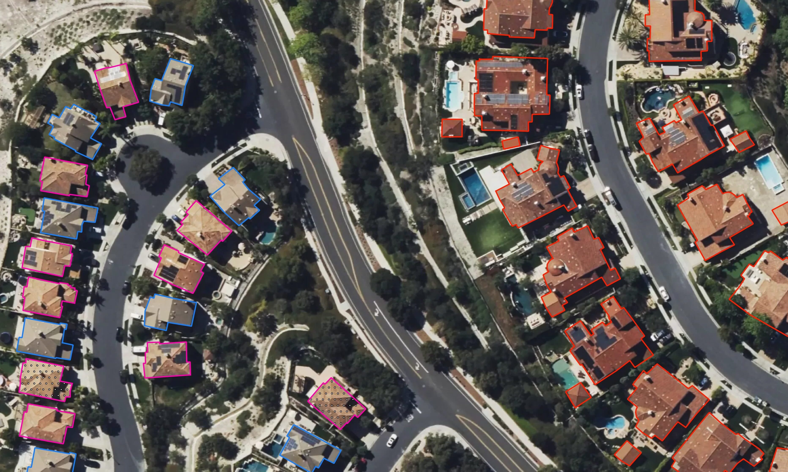

<html lang="no" dir="ltr">

<head></head>

<body data-theme="light" class="body nav--is-in- nav--top-only nav--is-in-view">
    <div data-barba="container" data-barba-namespace="">


        <meta charset="utf-8">

        <meta http-equiv="X-UA-Compatible" content="IE=edge">
        <meta name="viewport" content="width=device-width, initial-scale=1, maximum-scale=5.0, user-scalable=yes">
        <!--
    <link rel="preconnect" href="https://fonts.googleapis.com">
    <link rel="preconnect" href="https://fonts.gstatic.com" crossorigin>
    <link href="https://fonts.googleapis.com/css2?family=Roboto:ital,wght@0,100;0,300;0,400;0,500;0,700;0,900;1,100;1,300;1,400;1,500;1,700;1,900&display=swap" rel="stylesheet">    
-->
        <link rel="apple-touch-icon" sizes="180x180" href="images/apple-touch-icon.png">
        <link rel="icon" type="image/png" sizes="32x32" href="images/favicon-32x32.png">
        <link rel="icon" type="image/png" sizes="16x16" href="images/favicon-16x16.png">
        <link rel="manifest" href="/wp-content/themes/matter/img/site.webmanifest">
        <link rel="preconnect" href="https://fonts.googleapis.com">
        <link rel="preconnect" href="https://fonts.gstatic.com" crossorigin="">
        <link
            href="https://fonts.googleapis.com/css2?family=Chivo+Mono:ital,wght@0,100..900;1,100..900&family=Hanken+Grotesk:ital,wght@0,100..900;1,100..900&display=swap"
            rel="stylesheet">
        <link rel="stylesheet" href="css/styles.css">
        <style>


        </style>
        <style>
        </style>
        <meta name="robots" content="noindex, nofollow">
        <style>
            img:is([sizes="auto" i], [sizes^="auto," i]) {
                contain-intrinsic-size: 3000px 1500px
            }
        </style>
        <script id="cookieyes" type="text/javascript" src="js/script.js"></script>
        <link rel="dns-prefetch" href="//js-na2.hs-scripts.com">
        <style id="classic-theme-styles-inline-css" type="text/css">
            /*! This file is auto-generated */
            .wp-block-button__link {
                color: #fff;
                background-color: #32373c;
                border-radius: 9999px;
                box-shadow: none;
                text-decoration: none;
                padding: calc(.667em + 2px) calc(1.333em + 2px);
                font-size: 1.125em
            }

            .wp-block-file__button {
                background: #32373c;
                color: #fff;
                text-decoration: none
            }
        </style>
        <link rel="https://api.w.org/" href="https://matter.com/wp-json/">
        <link rel="alternate" title="JSON" type="application/json" href="https://matter.com/wp-json/wp/v2/pages/264">
        <link rel="EditURI" type="application/rsd+xml" title="RSD" href="https://matter.com/xmlrpc.php?rsd">
        <meta name="generator" content="WordPress 6.8.3">
        <link rel="canonical" href="https://matter.com/applications/">
        <link rel="shortlink" href="https://matter.com/?p=264">
        <link rel="alternate" title="oEmbed (JSON)" type="application/json+oembed"
            href="https://matter.com/wp-json/oembed/1.0/embed?url=https%3A%2F%2Fmatter.com%2Fapplications%2F">
        <link rel="alternate" title="oEmbed (XML)" type="text/xml+oembed"
            href="https://matter.com/wp-json/oembed/1.0/embed?url=https%3A%2F%2Fmatter.com%2Fapplications%2F&format=xml">

        <!-- DO NOT COPY THIS SNIPPET! End of Page Analytics Tracking for HubSpot WordPress plugin -->
        <meta name="generator"
            content="Elementor 3.31.3; features: e_font_icon_svg, additional_custom_breakpoints, e_element_cache; settings: css_print_method-external, google_font-enabled, font_display-swap">
        <style>
            .e-con.e-parent:nth-of-type(n+4):not(.e-lazyloaded):not(.e-no-lazyload),
            .e-con.e-parent:nth-of-type(n+4):not(.e-lazyloaded):not(.e-no-lazyload) * {
                background-image: none !important;
            }

            @media screen and (max-height: 1024px) {

                .e-con.e-parent:nth-of-type(n+3):not(.e-lazyloaded):not(.e-no-lazyload),
                .e-con.e-parent:nth-of-type(n+3):not(.e-lazyloaded):not(.e-no-lazyload) * {
                    background-image: none !important;
                }
            }

            @media screen and (max-height: 640px) {

                .e-con.e-parent:nth-of-type(n+2):not(.e-lazyloaded):not(.e-no-lazyload),
                .e-con.e-parent:nth-of-type(n+2):not(.e-lazyloaded):not(.e-no-lazyload) * {
                    background-image: none !important;
                }
            }
        </style>
        <link rel="icon" href="images/cropped-favicon-48x48-1-32x32.png" sizes="32x32">
        <link rel="icon" href="images/cropped-favicon-48x48-1-192x192.png" sizes="192x192">
        <link rel="apple-touch-icon" href="images/cropped-favicon-48x48-1-180x180.png">
        <meta name="msapplication-TileImage"
            content="https://matter.com/wp-content/uploads/2025/01/cropped-favicon-48x48-1-270x270.png">
        <style type="text/css" id="wp-custom-css">
            .cky-notice .cky-title {
                font-family: "ABC Monument Grotesk", sans-serif !important;
                font-weight: 700 !important;
                font-size: 16px !important;
            }

            .cky-notice-des p {
                font-size: 12px;
                font-family: "ABC Monument Grotesk", sans-serif !important;
                font-weight: 500 !important;
            }

            .cky-notice button {
                padding: 0px !important;
            }


            /* Patch to fix clickability issues on individual "People" pages */

            /* Let the left grid text ignore mouse clicks */
            .people__left-grid {
                pointer-events: none;
            }

            /* Re-enable clicks for the text inside it (so the name itself stays selectable) */
            .people__left-grid * {
                pointer-events: auto;
            }

            /* Ensure the right column is always above the left */
            .people__right {
                position: relative;
                z-index: 2;
            }
        </style>

        <link rel="alternate" hreflang="en" href="https://matter.com/applications">
        <link rel="alternate" hreflang="fr" href="https://matter.com/fr/applications">
        <link rel="alternate" hreflang="x-default" href="https://matter.com/applications/">


        <!-- SEO Meta Tags -->
        <meta name="description"
            content="With over ten space missions under our belt and thirty-five years of building hyperspectral technology — we are building the next-generation of Earth observation">
        <meta name="author" content="Matter">


        <!-- Open Graph Meta Tags (for social media sharing) -->
        <meta property="og:locale" content="nb_NO">
        <meta property="og:title" content="Applications - Matter">
        <meta property="og:description"
            content="With over ten space missions under our belt and thirty-five years of building hyperspectral technology — we are building the next-generation of Earth observation">
        <meta property="og:url" content="https://matter.com/applications/">
        <meta property="og:image" content="images/isr-768x432.jpg">
        <meta property="og:type" content="website">
        <meta property="og:site_name" content="Matter">

        <!-- Twitter Card Meta Tags (for Twitter sharing) -->
        <meta name="twitter:card" content="summary_large_image">
        <meta name="twitter:title" content="Applications - Matter">
        <meta name="twitter:description"
            content="With over ten space missions under our belt and thirty-five years of building hyperspectral technology — we are building the next-generation of Earth observation">

        <meta name="twitter:image" content="https://matter.com/wp-content/uploads/2024/12/isr-768x432.jpg">


        <title>Applications - Matter</title>


        <a href="#content" class="skip-to-content">Skip to main content</a>

        <section class="applications-listing">


            <div class="application-item">

                <h2 class="top-info__header">Bastnäsite Detection</h2>
                <p class="top-info__desc">Explore critical resources like rare earth elements and lithium - key for
                    renewable energy and national security.</p>
                <div class="anchor-item__pixel-map-wrapper">
                    <div class="pixel-map anchor-item" data-pixel-map="" id="mining">
                        
                        <div class="pixel-map__tooltip" style="display: none;"></div>

                        <div class="pixel-map__blur">
                            <span class="pixel-map__blur-text">Hover to See</span>
                        </div>

                    </div>
                    <p class="anchor-item__caption">DOY 2024-289<br>
                        T13:21:10 Local Time</p>
                </div>

                <div class="bottom-info">
                    <div class="copy left">
                        <h3>The Gap</h3>
                        <p>Exploration is resource intensive and today’s satellite data lack the technology to detect
                            and quantify mineral assemblages of interest.</p>
                    </div>

                    <div class="copy right">
                        <h3>The Solution</h3>
                        <p>Direct detection of mineral abundances and uncertainties to guide mine operations and find
                            untapped resources anywhere on Earth.</p>
                    </div>

                </div>
            </div>

            <div class="application-item">
                <h2 class="top-info__header">Precision Farming</h2>
                <p class="top-info__desc">Detect diseases, nutrient deficiencies, and other costly issues early to
                    minimize losses and reduce manual workloads.</p>
                <div class="anchor-item__pixel-map-wrapper">
                    <div class="pixel-map anchor-item" data-pixel-map="" id="agriculture">
                        
                        <div class="pixel-map__tooltip" style="display: none;"></div>

                        <div class="pixel-map__blur">
                            <span class="pixel-map__blur-text">Hover to See</span>
                        </div>

                    </div>
                    <p class="anchor-item__caption">DOY 2023-353<br>
                        T13:23:53 Local Time</p>
                </div>

                <div class="bottom-info">
                    <div class="copy left">
                        <h3>The Gap</h3>
                        <p>Today’s satellites offer low-resolution multispectral indices that are symptomatic of past
                            issues and don’t drive meaningful intervention.</p>
                    </div>

                    <div class="copy right">
                        <h3>The Solution</h3>
                        <p>Direct quantification of soil and plant nutrients, early disease detection, and more at the
                            individual plant level to drive specific intervention.</p>
                    </div>

                </div>
            </div>

            <div class="application-item">
                <h2 class="top-info__header">Nitrogen Dioxide (NO2) Detection</h2>
                <p class="top-info__desc">Accurately track gases and pollutants like methane and sulfur dioxide to
                    monitor emissions, industrial activity, air quality, and environmental compliance.</p>
                <div class="anchor-item__pixel-map-wrapper">
                    <div class="pixel-map anchor-item" data-pixel-map="" id="emissions">
                        
                        <div class="pixel-map__tooltip" style="display: none;"></div>

                        <div class="pixel-map__blur">
                            <span class="pixel-map__blur-text">Hover to See</span>
                        </div>

                    </div>
                    <p class="anchor-item__caption">DOY 2024-147<br>
                        T13:19:08 Local Time</p>
                </div>

                <div class="bottom-info">
                    <div class="copy left">
                        <h3>The Gap</h3>
                        <p>Current systems lack the capacity, sensitivity, and resolution to detect small but important
                            emissions and trace their sources effectively.</p>
                    </div>

                    <div class="copy right">
                        <h3>The Solution</h3>
                        <p>Global emissions monitoring of these gases and other volatiles with the lowest detection
                            limits ever from space (e.g., <50 kg/hour for methane), with resolutions that enable source
                                identification.</p>
                    </div>

                </div>
            </div>

            <div class="application-item">
                <h2 class="top-info__header">Risk Assessment</h2>
                <p class="top-info__desc">Accurately geolocated metrics on properties for risk assessment during
                    underwriting.</p>
                <div class="anchor-item__pixel-map-wrapper">
                    <div class="pixel-map anchor-item" data-pixel-map="" id="insurance">
                        
                        <div class="pixel-map__tooltip" style="display: none;"></div>

                        <div class="pixel-map__blur">
                            <span class="pixel-map__blur-text">Hover to See</span>
                        </div>

                    </div>
                    <p class="anchor-item__caption">DOY 2024-186<br>
                        T13:22:35 Local Time</p>
                </div>

                <div class="bottom-info">
                    <div class="copy left">
                        <h3>The Gap</h3>
                        <p>Today’s sensors don’t provide adequate information about roof quality, vegetation, occupancy,
                            and more for underwriting and RCV models.</p>
                    </div>

                    <div class="copy right">
                        <h3>The Solution</h3>
                        <p>Direct measurement of roof material and quality, vegetation classification and health,
                            occupancy, and more  significant improvements to property risk, wildfire, and flood models.
                        </p>
                    </div>

                </div>
            </div>


            <script type="speculationrules">
{"prefetch":[{"source":"document","where":{"and":[{"href_matches":"\/*"},{"not":{"href_matches":["\/wp-*.php","\/wp-admin\/*","\/wp-content\/uploads\/*","\/wp-content\/*","\/wp-content\/plugins\/*","\/wp-content\/themes\/matter\/*","\/*\\?(.+)"]}},{"not":{"selector_matches":"a[rel~=\"nofollow\"]"}},{"not":{"selector_matches":".no-prefetch, .no-prefetch a"}}]},"eagerness":"conservative"}]}
</script>

            <script>
                const lazyloadRunObserver = () => {
                    const lazyloadBackgrounds = document.querySelectorAll(`.e-con.e-parent:not(.e-lazyloaded)`);
                    const lazyloadBackgroundObserver = new IntersectionObserver((entries) => {
                        entries.forEach((entry) => {
                            if (entry.isIntersecting) {
                                let lazyloadBackground = entry.target;
                                if (lazyloadBackground) {
                                    lazyloadBackground.classList.add('e-lazyloaded');
                                }
                                lazyloadBackgroundObserver.unobserve(entry.target);
                            }
                        });
                    }, { rootMargin: '200px 0px 200px 0px' });
                    lazyloadBackgrounds.forEach((lazyloadBackground) => {
                        lazyloadBackgroundObserver.observe(lazyloadBackground);
                    });
                };
                const events = [
                    'DOMContentLoaded',
                    'elementor/lazyload/observe',
                ];
                events.forEach((event) => {
                    document.addEventListener(event, lazyloadRunObserver);
                });
            </script>
            <script type="text/javascript" src="js/ds-code-helpers.js" id="ds_code_helpers-js"></script>
            <script type="text/javascript" id="leadin-script-loader-js-js-extra">
                /* <![CDATA[ */
                var leadin_wordpress = { "userRole": "visitor", "pageType": "page", "leadinPluginVersion": "11.3.21" };
                /* ]]> */
            </script>
            <script type="text/javascript" src="js/243405515.js" id="leadin-script-loader-js-js"></script>
            <script type="text/javascript" src="js/pixel.js"></script>

    </div>
</body>

</html>